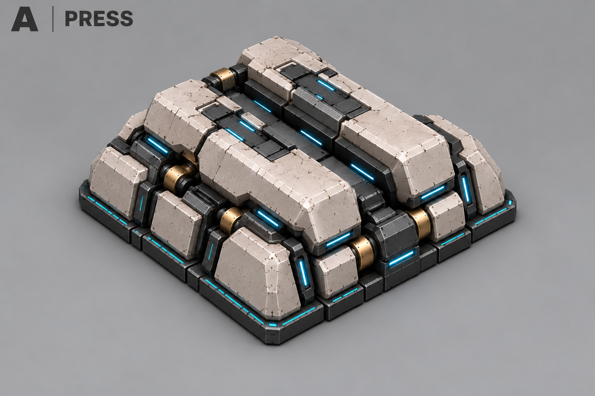
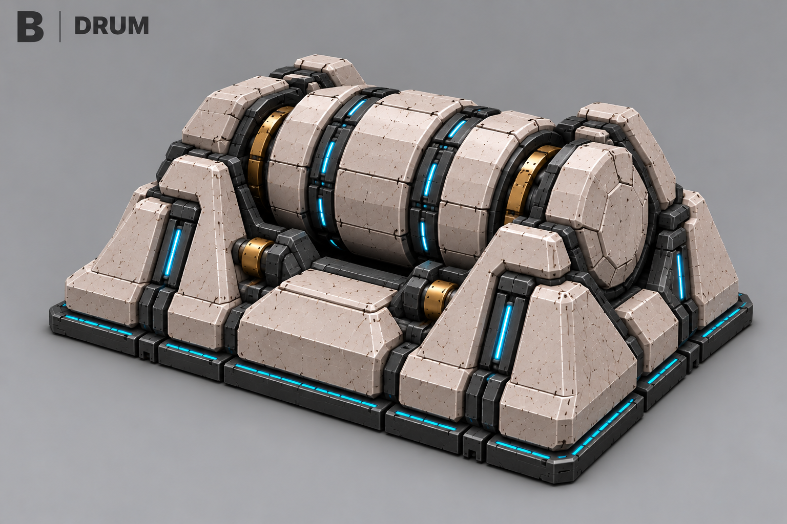
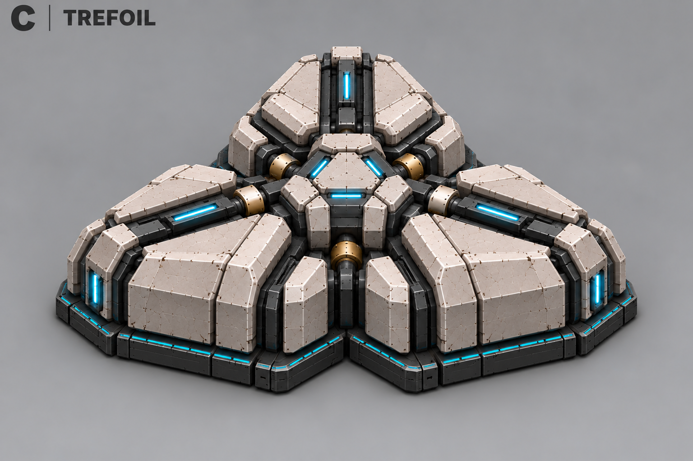
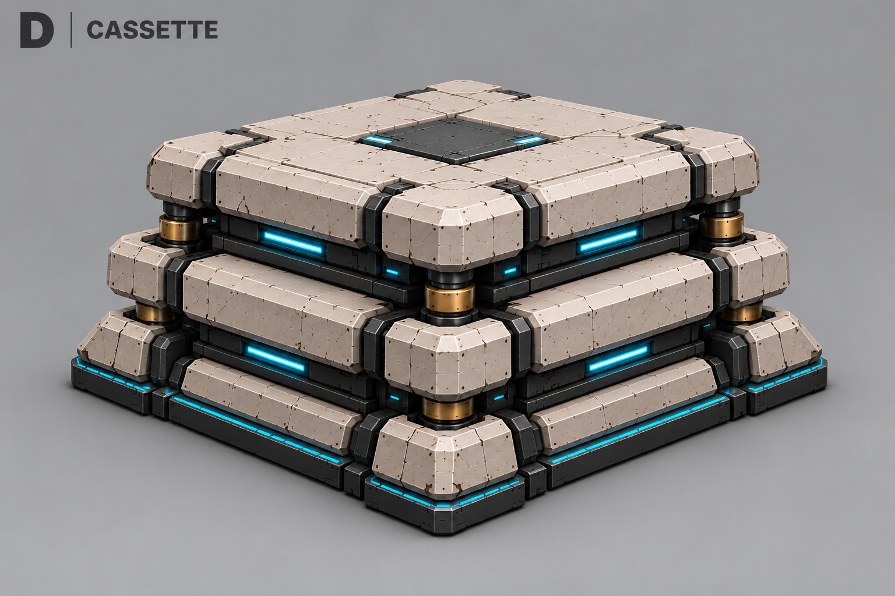
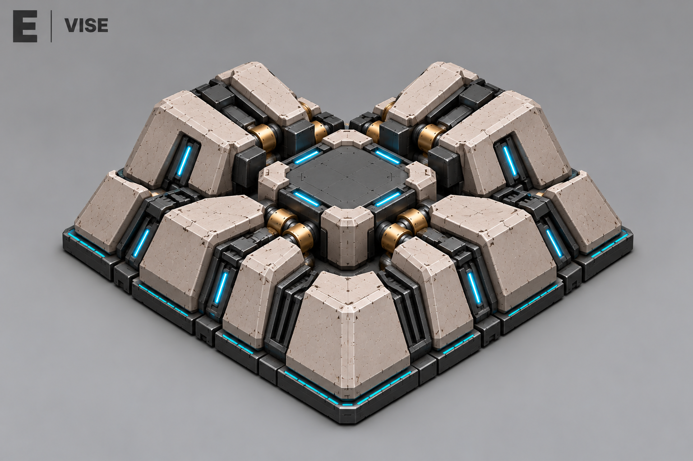
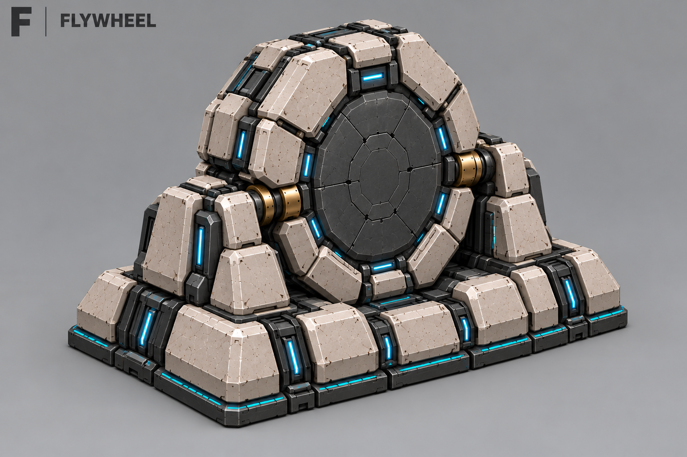

A — Пресс
Две массивные обрабатывающие секции с узким закрытым швом между ними.

Эти варианты показались однообразными. Новый поиск: ёмкости, мембраны и нанитная масса
Все боевые юниты, одна очередь. До трёх узлов на готовое Ядро. Выбор открыт.
Без ворот и пандусов: наниты вытекают у основания и собираются снаружи. Здание при размещении не вращается.
Все концепты · Описание · Промпты
Две массивные обрабатывающие секции с узким закрытым швом между ними.

Горизонтальный сегментированный барабан на стационарных опорах.

Три клиновидных блока вокруг низкого центрального узла.

Стопка широких технологических плит с тёмными рабочими слоями.

Четыре диагональных блока вокруг закрытой центральной камеры.

Вертикальное технологическое колесо в низком неподвижном основании.
